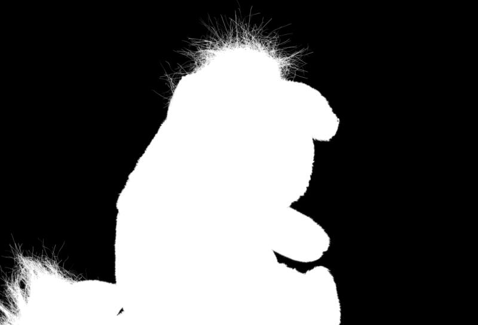
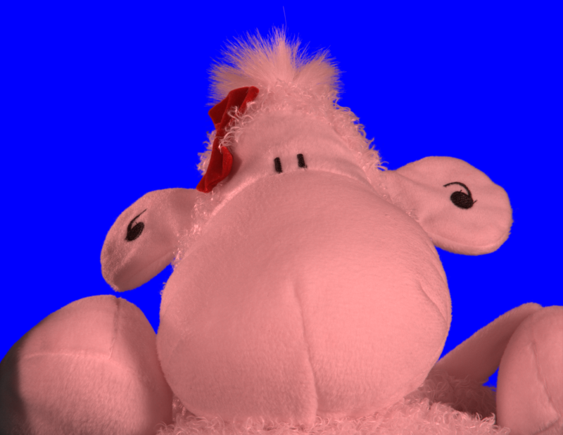
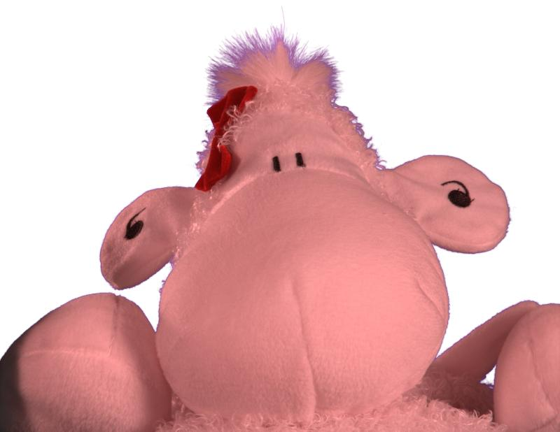
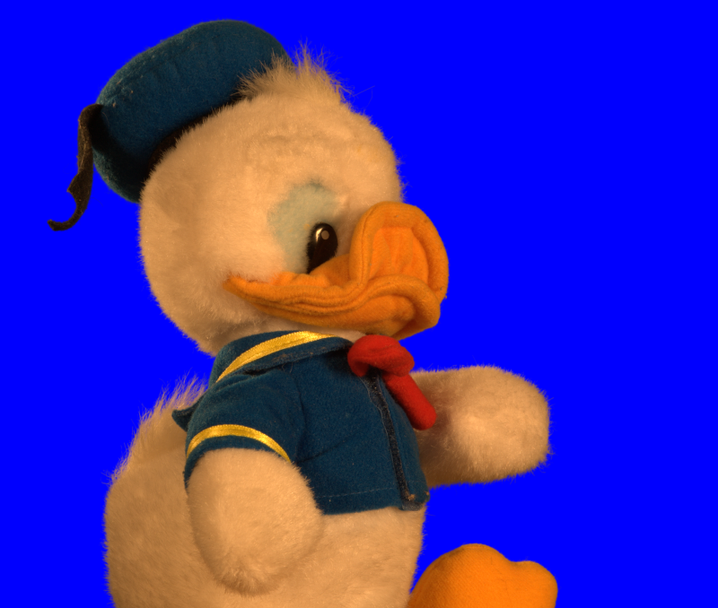
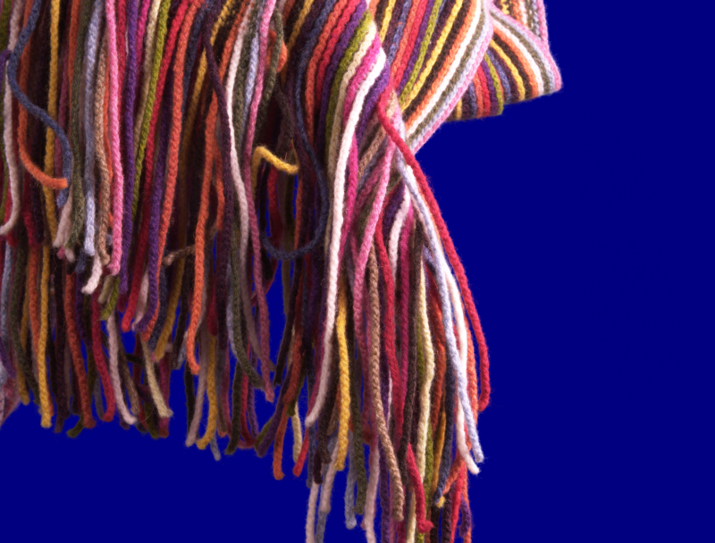
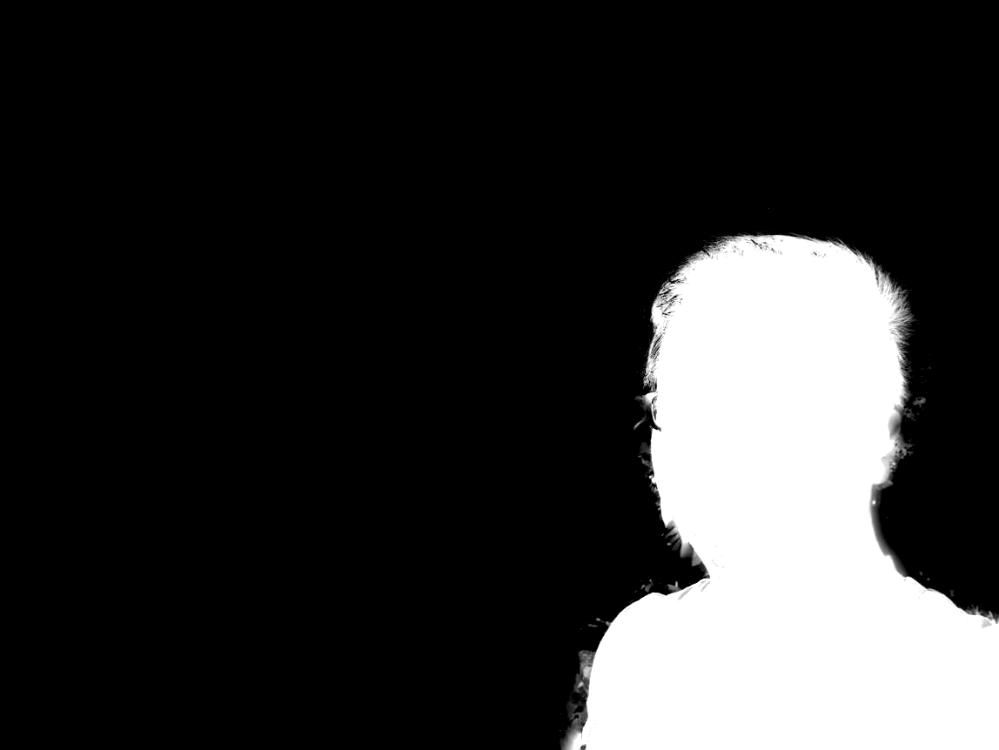

Raymond Lo (1155009121)
In this assignment, we aim to perform Image Matting. Image Matting is the separation of an image into a foreground image (F), a background image (B) and an alpha matte (alpha).
The relationship between these components and the input color image (C) is given by:
C = alpha * F + (1-alpha) * B
Matting is a very important topic in image process since it has many real life applications. Movie production, for example, requires separation of foreground objects from the background in order for speical effects to be applied to create a realistic scene. Another usage of matting is object recognition, in which computers automatically recognizes the key objects within an image.
The most tradition method in matting is the Blue Screen Matting, which was developed when there even wasn't any digital computers, and matting was done directly with the analogue signal.
In this project, different versions of Blue Screen Matting will be implemented. In addition, more advanced methods, including Poisson Matting and Bayesian Matting, will be introduced.
We present three different Blue Screen Matting models and introduce how matting can be implemented under each model.
This model assumes that the foreground image contains no blue ( B_F = 0 ), while the background is purely blue ( R_B,G_B = 0 ).
Therefore, just by considering the blue-channel, we can determine the alpha.
Let B_B denotes the background blue intensity and B denotes the image blue intensity, the alpha = 1 - B/B_B
Here are some results of blue screen matting
| Original | Alpha | Matte |
|  | |
|
|
The "No Blue" assumption is a very strong one. Foreground of most natural images contains blue.
For example, white color (#FFFFFF) contains blue. Therefore, the "No Blue" assumption forces a portion of intensity, hue and saturation to be unreachable to the foreground.
As shown in the results above, despite the easiness and accuracy of the alpha matte, the color of the resultant matte looks unnatural.
Here are some results using my own photos:
| Original | Alpha | Matte |
As shown above, "No Blue" matting distorts the hue of saturation of the image.
It is noticeable that there are often light yellow edges surrounding objects in the matte, which is caused by shadows. Shadow is grey, which is a mix of some blue, some red and some green. Removing the blue entirely leaves red and green components behind, hence the light yellow.
This model assumes that the foreground image is gray ( R_F = G_F = B_F ) while background is purely blue ( R_B = G_B = 0 ). We slightly loosen the assumptions by choosing either ( R_F = B_F ) or ( G_F = B_F ).
Here are some results of this form of blue screen matting. Both ( R_F = B_F ) and ( G_F = B_F ) were tested:
| Original | Alpha (G_F=B_F) | Alpha (R_F=B_F) | Matte (G_F=B_F) | Matte (R_F=B_F) |
 |
 |
|||
|  |  |
 | ||
 |
We can see that both assumptions gives similar results, but ( G_F = B_F ) works slightly better for this set of photos, mainly because the colors of the foreground objects are more inclined towards red, which makes ( R_F = B_F ) not as fit as ( G_F = B_F ).
A different result would be obtained if we use another set of photos with more green-ish colors.
Again, the "GRAY" assumption is too strong. It forces the matte to have unrealistic hue and saturation.
In this model, we no longer impose restrictions on the foreground. Instead, we use two versions of the same image with different background colors. With an increase in input, the equations can now be uniquely solved to get the foreground.
Here are some results under this model of blue screen matting:
| Original 1 | Original 2 | Alpha | Matte |
|  |  |
||
 |
|||
|  |  |
Finally we have a blue screen matting method that does not sacrifice actual colors.
However, this is extremely hard to be applied in real life, since it requires two images of the same foreground but different background.
If the second image is taken at a slight displacement or different angle from the first, the matting would not work.
When taking actual photos, it is almost impossible to keep every object unchanged and just change the background before thaking a second picture.
This model focuses on the gradient of the image. Under the assumption that color on both foreground and background images are smooth, change in color of the image is caused by change in alpha. Therefore, by setting gradient of alpha to be equal to that of the image, we get a Poisson equation which gives the alpha matte as solution.
In addition to the original image, the user also needs to input a trimap which indicates three regions of the image: definite foreground, definite background, and undecided region. Alpha values for definite foreground and background are 1 and 0 respectively. The goal of the matting is to resolve alpha for the undecided region only.
Below are the major steps of the implementation:
Steps 2 and 3 above are iterated for a number of times to enhance accuracy
As the very first step, we convert the image from color to grayscale before matting.
For each point in the definite foreground region, F equals the image intensity while B equals 0, and vice versa for definite background.
For each pixel in the undecided region, we set its F value to be equal to that of its nearest point in the definite foreground region, similarly for its B value. In MATLAB, this is achieved by creating a KDTreeSearcher and use its knnsearch() function. MATLAB's implementation is very efficient.
The resultant F and B values of this region is highly uneven, so we apply a Gaussian filter to smoothen it before further processing. If there is no smoothing, the sharp jumps in F and B would cause irregularities in the alpha computed.
By taking derivative on the equation I = alpha * F + (1-alpha) * B, gradient of alpha should be equal to the gradient of I divided by (F-B). To prevent singularity, we set the lower bound for the absolute value of (F-B) to be some small positive number epsilon.
The gradient of I is computed and divided by (F-B). Then, we write the equations for solving alpha in matrix form. By matrix division, we get the alpha values, which are normalized to fit into [0,1]
We consider the points in the undecided region with very high (>0.95) and very low (<0.05) alpha value. If the image intensity at these points are very close to the F or B values, i.e. difference in intensity within a certain limit, then these points will be grouped into definite regions.
After the trimap is updated by classification, we apply same procedures as step 1 to initialize F and B for the remaining undecided region. The F and B values are smoothed and then passed back into step 2 to solve for alpha.
Step 2 and Step 3 are iterated for a number of times, usually 10 times is suffcient for results to converge.
Here are the results of basic implementation of Poisson Matting:
| Original | Alpha | Matte |
 |
 |
|
 |
||
The running time of each of them are: 4.5s, 14.4s, 9.7s, 4.2s, which are roughly linear with the number of pixels each photo has.
The algorithm was able to matte out the fine details around the edges, such as the handrail of the lighthouse, veins on the wings of the dragonfly, hair and fur.However, it also introduced artifacts such as singular points and noise.
When a point is wrongly classified, its neighboring points are likely to be affected as well.
Next, we study the effects of different custom parameters used in the model to see how the algorithm can be optimized.
The Poisson equation state that the gradient of alpha equals gradient of image divided by (F-B).
To avoid singularity, we introduce epsilon as the minimum absolute value for (F-B). Initially, we set the value of epsilon as 0.001.
Now, different values of epsilon are tested:
| Epsilon = 0.001 (Basic) | Epsilon = 0.01 | Epsilon = 0.1 | Epsilon = 0.5 | Epsilon = 1 |
As epsilon increases, the Poisson matte gets smoother with fewer artifacts.
The reason is that as epsilon increases, the cap for 1/(F-B) is reduced, so the values obtained from solving Poisson equations are less likely to be extreme.
When epsilon=0.1, the alpha matte is sharp and contains almost no artifact. When epsilon>0.5, even though there is no artifact, the edges of the matte starts to blur, i.e. over-smoothed. Therefore, 0.1 is the optimal value for epsilon.
Gaussian filter is applied to smoothen (F-B) before it is inputted into Poisson equation. The basic implementation uses a 5-by-5 Gaussian filter with sigma=2.
Below we experiment two other Gaussian filters, one with less smoothing, and another one with more smoothing.
Below are the results when epsilon=0.01:
| 3-by-3, sigma=0.5 (Less smoothing) | 5-by-5, sigma=2 (Basic) | 10-by-10, sigma=4 (More smoothing) |
Generally, with greater smoothing, amount of artifact is slightly reduced.
However, the effect is insignificant, so we suggest to keep the basic implementation.
When we initialize F and B, we take the value of the nearest neighbor. The resultant F and B are highly uneven.
But what if instead of the nearest neighbor, we take the average of the nearest k neighbors?
Below are the results for different values of k. We take epsilon=0.01:
| k=1 (Basic) | k=2 | k=4 | k=8 | k=16 |
As k increases, we notice a general improvement of the matting.
As for running time, it slightly increases with k. The table below shows the running time for the 4 pics (in seconds):
| k=1 | k=2 | k=4 | k=8 | k=16 |
| 5.1 | 5.3 | 5.4 | 5.5 | 5.7 |
| 16.7 | 17.1 | 17.8 | 18.2 | 19.0 |
| 10.0 | 10.5 | 10.3 | 10.7 | 11.1 |
| 4.5 | 4.7 | 4.7 | 4.8 | 5.0 |
Setting k=4 stikes a good balance between image quality and computation efficiency.
We set epsilon=0.1, k=4, and use a 5-by-5 Gaussian filter with sigma=2 for the algorithm.
Note that we have been working on grayscale images above, but the algorithm can be applied to color images.
After computing the alpha for the grayscale version of the image, we initialize F and B with nearest neighbors for each color channel. The result is the desired color matte.
Below are the results:
| Original | Alpha | Matte |
|
||
|
||
Notice that for the third picture, the matting result of the top part is stilll not quite satisfactory due to the fact that the undecided region touches the top border, which means fewer boundary conditions for solving alpha.
Here are some results using my own photos:
| Original | Trimap | Alpha | Matte |
|  | |||
The key idea to Bayesian Matting is that, in either F or B, color of pixels should be similar. Therefore, we measure the likelihood of whether a pixel in the undecided region belongs to F or B, based on the cluster of colors from the definite fore/background.
Below are the major steps of the implementation:
Steps 2 to 4 are repeated for all pixels in the undecided region. We first work on the pixels adjacent to the definite fore/backgrounds, and then work on interior undecided pixels.
For the definite foreground, alpha=1. For definite background, alpha=0.
For the undecided region, we first initialize those pointson the boundary, i.e. adjacent to definite fore/background.
In order to locate these points, we create a mask where the value is 0 for undecided region and 1 for definite fore/background.
Then, we apply a 3-by-3 laplacian filter on the mask. All the boundary pixels would become positive, while other pixels become either 0 or negative.
Thus, we have extracted all the boundary pixels.
For each boundary pixel, we consider its neighborhood.
Its alpha value is initialized to be the mean of those of the determined pixels in the neighborhood.
After we have initialized all the boundary pixels, the trimap is updated and we filter again to get the new boundary pixels. This process is repeated until all pixels in the undecided region has been initialized.
For each undecided pixel, we compute values of F and B that maximizes the likelihood of the observed color, a result derived from Bayes' theorem (hence the name 'Bayesian Matting').
To do so, we group its nearby F colors into one cluster and B colors into another one. We view the distribution of the F and B colors at that pixel to follow Gaussian distribution. Then, likelihood is determined by the average color of each cluster and the color distances of the observed color from the average colors.
The closer the neighbor, the more likely its F,B colors are close to that of the undecided pixel.
Therefore, we assign weights on pixels in its neighborhood.
The weights are assigned to follow a spatial Gaussian distribution.
In addition to spatial distance, alpha values are also important for weighing the neighbors. For pixels with alpha close to 1, we are confident with its F value so we assign more weight to this neighbor when calculating F.
Similarly, alpha near 0 gives confidence on the B values.
Therefore, in addition to spatial distance weights, we multiply them with alpha^2 for calculation of F, and (1-alpha)^2 for calculation of B.
After calculating the weights, we can get the weighted averages of F and B colors of those decided pixels in the neighborhood.
Next, we calculate the covariance matrix at each pixel. The covariance matrix indicates the relationship among the three channels (R,G,B) for the colors in the cluster. We weigh them using the same weights as above.
From taking derivative of the Bayesian formula, we can derive the formula for solving likelihood-maximizing F and B colors.
The equation depends on inverse of the covariance matrix, average color and the variance of
image colors.
(Details of the equation and derivation can be found at http://grail.cs.washington.edu/projects/digital-matting/papers/cvpr2001.pdf)
By fixing F and B, the likelihood function becomes a quadratic equation in alpha.
A closed-form solution in F,B,C is obtained, so alpha is found.
We conduct steps 2-4 on the boundary undecided pixels. After they have been processed, we proceed with the new boundary pixels, the same sequence as in step 1 when we initialize alpha.
Here are the results of basic implementation of Bayesian Matting:
| Original | Alpha | Matte | F | B |
We see that the results are not quite satisfactory.
The first one was partly acceptable but part of the hair still got trimmed away in the matte.
For the second picture, the matte introduced "shadows" around the lighthouse. They were colors that were wrongly classified as foreground.
For the last picture, the matting was a mess as it failed to recognize the fur of the object.
Moreover, F and B colors generated were significantly off.
This is due to the fact that the background mainly consists of two different colors. The distribution is bimodal.
Meanwhile in the basic Bayesian model, we assume the colors to follow Gaussian distribution with single mode.
We try to optimize the algorithm by changing the custom parameters in the basic implementation.
One of the key custom parameters is sigma_C, which is the
color variance of the image.
In basic implementation,
sigma_C=0.02. We try different values to see if results improve.
| sigma_C=0.01 | sigma_C=0.02 (Basic) | sigma_C=0.05 | sigma_C=0.1 | sigma_C=0.2 | sigma_C=0.5 |
We see that the results are much better with larger values of sigma_C.
For example, when sigma_C=0.2, matte results as follow:
| Original | Basic | New |
Next, we try the method on higher-res images:
| Original | Alpha | Matte |
 |
||
 |
||
 |
The photos take 22s,70s and 27s to process respectively. Computation time is roughly linear with number of pixels.
Again, there is still room of improvement for the algorithm.
The last one failed in Bayesian matting mainly because the color of the hair (light brown) is much closer to the background color (brown) than the color of the clothes (bluish green).
Therefore, the algorithm treated the hair as background object.
Finally, we try to address the problem where foreground and background consists of several color clusters.
We modify our algorithm to partition the fore/background colors into several clusters. In MATLAB, this is implemented with function kmean().
Then, for each pair of clusters, we calculate the likelihood and choose the pair with the highest likelihood.
The pair of clusters is used to calculate the optimal F and B.
Here are the results:
| Original | Alpha | Matte |
 |
||
 |
The implementation requires further refinement.
Among the three matting methods discussed:
BlueScreen Matting is the easiest to implement and quickest in computation, but it imposes strict restrictions on the image and very likely to distort colors.
Poisson Matting gives quite reliable and accurate results if fine tuned correclty. Its performance is consistent and it does not impose any restriction on the image, hence very applicable in real life.
Bayesian Matting also imposes no restriction on the image. However, further work is required on improving the implementation in order for the results to be satisfactory.
{kind=link}
{kind=link}
{kind=link}
{kind=link}
{kind=link}
{kind=link}
{kind=link}
{kind=link}
{kind=link}
{kind=link}
{kind=link}
{kind=link}
{kind=link}
{kind=link}
{kind=link}
{kind=link}
{kind=link}
{kind=link}
{kind=link}
{kind=link}
{kind=link}
{kind=link}
{kind=link}
{kind=link}
{kind=link}
{kind=link}
{kind=link}
{kind=link}
{kind=link}
{kind=link}
{kind=link}
{kind=link}
{kind=link}
{kind=link}
{kind=link}
{kind=link}
{kind=link}
{kind=link}
{kind=link}
{kind=link}